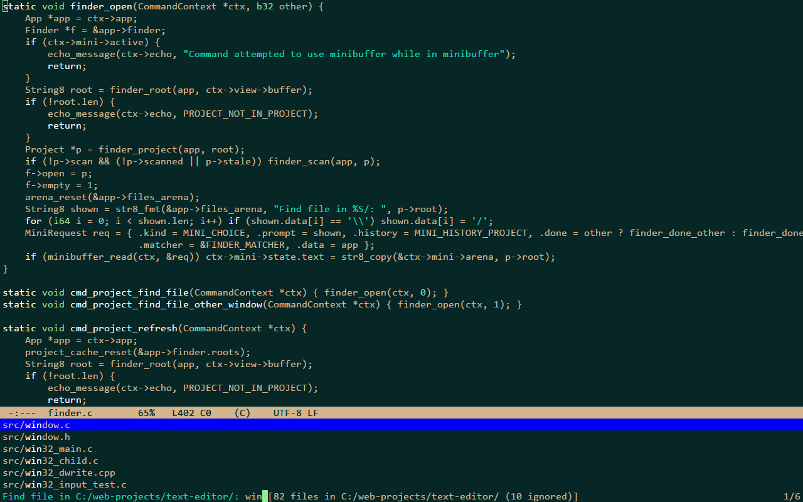

Projects and search
Projects
A project is the nearest directory above a file that holds .git, .hg, .svn or .ronin-project (the
project_markers setting), or a directory given on the command line (ronin C:\code\project). It is scanned on a
background thread; .gitignore files (a subset of the syntax), project_ignore and .ronin-project decide what is
listed, and it is scanned again when files come or go (M-x project-refresh forces it). A scan stops after
project_max_files files and says so.
A .ronin-project file at the project's root can list [ignore] and [allow] patterns, one per line, and the
[build] block of Builds.
Finding a file
| keys | command | what it does |
|---|---|---|
C-x p f | project-find-file | find a file of the project by fuzzy matching its path |
The characters typed must appear in order in the file's path (a / matches the separator, a space separates words that
must all match); matches in the file name and at word starts come first. M-x project-find-file-other-window opens the
file in another window.

Searching the project
C-x p g searches every file of the project for a literal text (smart case, as C-s), on background threads, and
lists the matches in *search* while it runs; buffers with unsaved changes are searched as they are in ronin.
search_workers sets the threads and search_max_results the matches it lists before it stops.
| keys | command | what it does |
|---|---|---|
C-x p g | project-search | search every file of the project for a literal text |
M-s o | occur | the lines of this buffer that contain a text, in *occur* |
M-g n M-g p | next-error previous-error | the next / previous match (or build error) from any window |
In *search* and *occur*:
| keys | command | what it does |
|---|---|---|
RET | compile-goto-error | visit the match in another window |
n p | next-error-no-select previous-error-no-select | show the next / previous match in another window |
g | recompile | search again |
q | quit-window | close the results window |